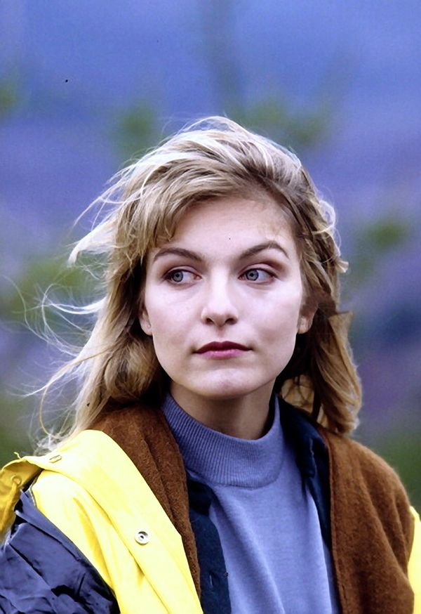

Principales
- Kyle MacLachlan como Dale Cooper
-

- Sheryl Lee como Laura Palmer
-

- Michael Ontkean como Sheriff Harry S. Truman
-

- Ray Wise como Leland Palmer
-

Secundarios
- Richard Beymer como Benjamin Horne
- Madchen Amick como Shelly Johnson
- Dana Ashbrook como Bobby Briggs
- Peggy Lipton como Norma Jennings
 Twin Peaks
Twin Peaks